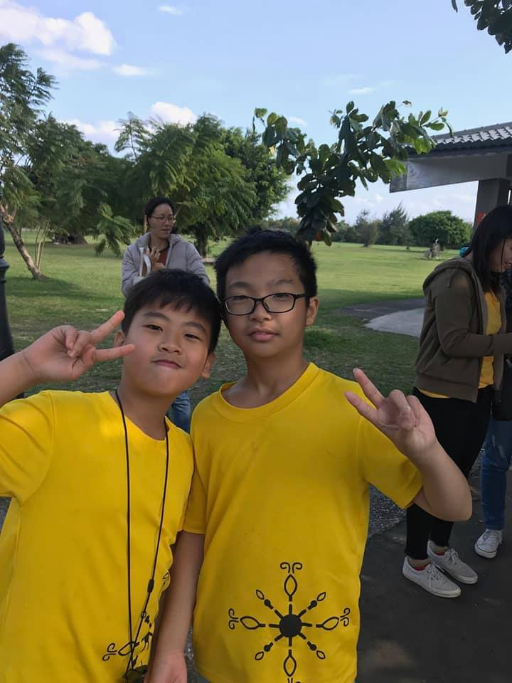

|  | QAQ之家-主人 我的英語名是Max,匿名冰向帆和包太陽,真名不透露,興趣是看小說和動漫, 最喜歡的動漫 是妖尾(妖精尾巴)在追 夏目友人丈帳 , 最喜歡的小說是特傳 (特 殊傳說) 在追哈利波特7,身高180(良心:你說謊 (我不會痛阿(良心:我會!(個人:對不起,我內心戲多))))體重38.8(P.S.我很怕黑, 所以叫QAQ 之家)。 |
| Time | In | This |
|---|---|---|
| 一年級~六年級 | 國立臺東大學附設實驗國民小學 | 五科 |
| 三年級~六年級 | 順天樹屋 | 電腦 |
| 不定時 | 我家 | 煮東東 |
| Name | skilled |
|---|---|
| 打籃球(輔助) | 🌕🌕🌕 |
| 電腦 | 🌕🌕🌕🌕 |
| 煮東東 | 🌕 |